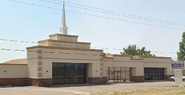
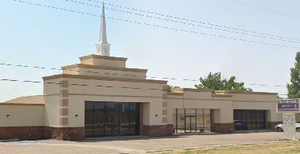

THE
FELLOWSHIP
LUBBOCK
THE
FELLOWSHIP
LUBBOCK
Membership
We welcome your petition for membership at The Fellowship. There are
several ports of entry into our fellowship, and we will work diligently
to accommodate you and your needs.
Anyone may join regardless of background, race, or social status, by
professing faith in Jesus Christ as the only begotten Son of God. This
profession will be followed by baptism by immersion in compliance with
the Holy Scriptures. You then to attend a one-hour long orientation
session which helps you understand what programs we offer. This
orientation explains our church structure, programs, and expectations.
You receive helpful materials and have a chance to ask questions about
any concerns you may have. Upon completion, and mutual agreement, you
have the option to join The Fellowship.
If you belong to a Southern Baptist Church previously, then all that is
needed, is the information about your former church. Our office will
take care of the rest.
If you're coming from a sister church of another denomination, the
orientation class will help us decide what steps we need to take to move
you over into our congregation. This is necessary to ensure your
happiness and fruitfulness as you attend here at The Fellowship.

 
